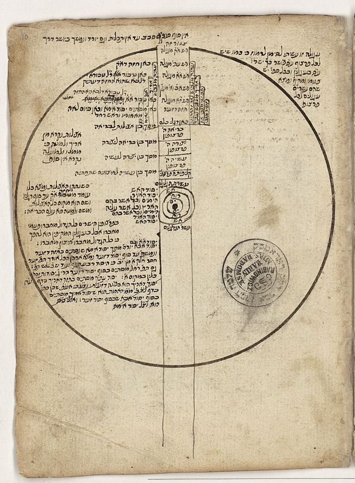

The kabbalah of the Ari and its adaptation by the movement of Sabbatai Zvi

Listen to the audioMP3
Zoom chat (11 messages)
- 21:03:12Michael Sokolowpress.princeton.edu/books/paperback/9780691172095/sabbata…
- 21:06:17Michael SokolowPantheism (the one I did not know): a doctrine which identifies God with the universe, or regards the universe as a manifestation of God.
- 21:06:38Michael SokolowPantheism (the one I did know): worship that admits or tolerates all gods.
- 21:08:13Michael Sokolow"Sefirot (/sfɪˈroʊt, ˈsfɪroʊt/; Hebrew: סְפִירוֹת səp̄īrōṯ), meaning emanations, are the 10 attributes/emanations in Kabbalah, through which Ein Sof (The Infinite) reveals itself and continuously creates both the physical realm and the chain of higher metaphysical realms (Seder hishtalshelus)."
- 21:09:39Michael SokolowThe sefirot are 10 emanations, or illuminations of God's infinite light as it manifests in creation. As revelations of the creator's will (רצון rɔṣon), the sefirot should not be understood as 10 different "gods", but rather as 10 different channels through which the one God reveals His will.
- 21:16:25Michael SokolowFrom Chabad basic info: "Tzimtzum: (lit. "contraction"); the process of Divine self-contraction and self-limitation which makes possible the concept of limited, worldly existence"
- 21:20:30Evan's iPhoneThis was an אדם before אדם?
- 21:29:14Evan's iPhoneRambam in hilchos teshuva
- 21:32:51Michael SokolowThe distinction between antinomian and other Christian views on moral law is that antinomians believe that obedience to the law is motivated by an internal principle flowing from belief rather than from any external compulsion
- 21:33:35Michael Sokolow"an antinomian is one who takes the principle of salvation by faith and divine grace to the point of asserting that the saved are not bound to follow the moral law"
- 21:55:40Michael Sokolowmishpacha.com/sometimes-mashiach-is-not-the-solution/